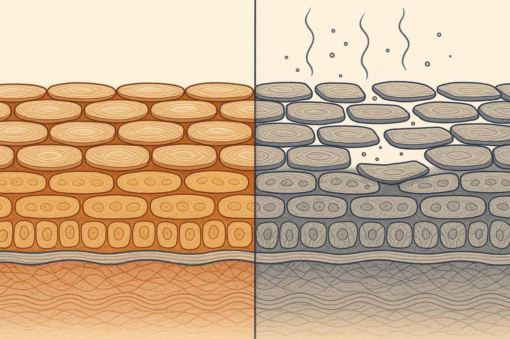
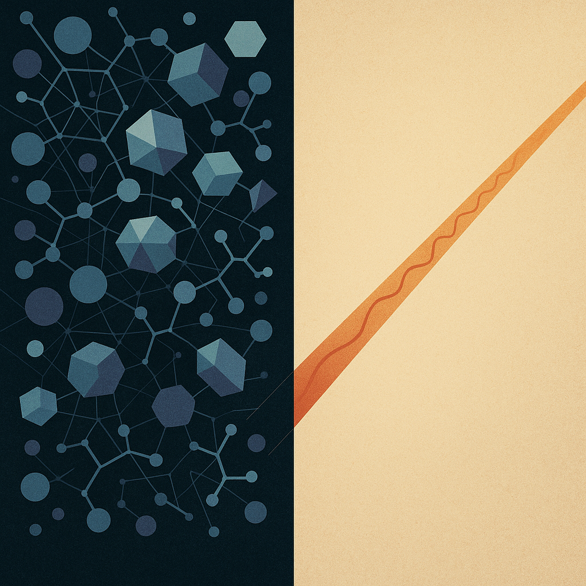
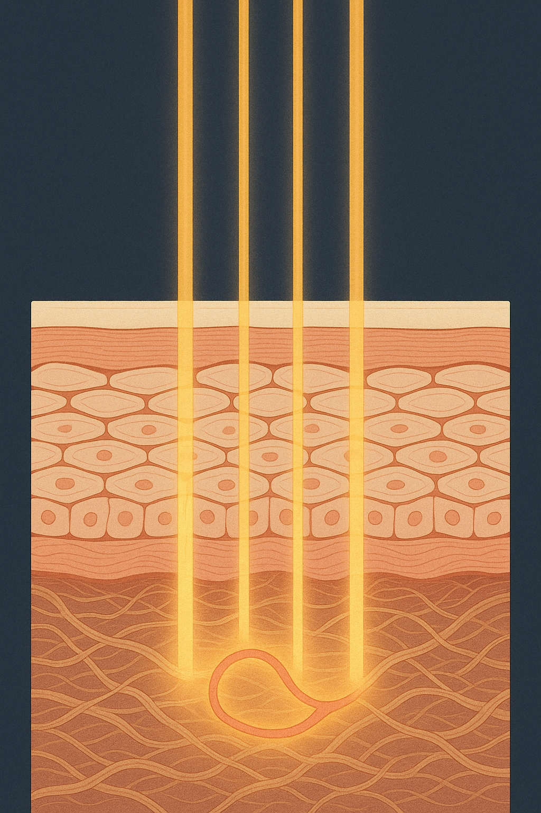

Review below. Reply approve to publish the Facebook post, or tell me edits.

If your skin has been tight, stingy and strangely reactive lately, the instinct is to go looking for the product you are missing. A stronger serum. A better acid. Something new.
Here is the uncomfortable possibility: for a lot of people in 2026, there is no missing product. There is a surplus. Skincare has quietly become a stacking hobby, and the skin most likely to be struggling right now is not the neglected kind. It is the over-serviced kind, layered nightly with exfoliating acids, retinol and vitamin C until the barrier that holds everything together starts to give out. The skinimalism turn happening this year is not a trend for the sake of it. It is a correction.
Your skin barrier is the outermost layer, the stratum corneum. The easiest way to picture it is a brick wall. The bricks are corneocytes, flattened skin cells packed tightly together. The mortar between them is a lipid mix (ceramides, cholesterol, fatty acids) that seals the gaps, holds water in and keeps irritants out.
That mortar is the whole game. When it is intact, moisture stays put and most of what you apply behaves itself. When it thins, water escapes, irritants slip in, and skin that tolerated everything last year suddenly tolerates nothing.
Exfoliating acids, retinoids and strong actives all work, in part, by deliberately disturbing this wall. That is fine in sensible doses. The skin rebuilds. But layer several of them, night after night, and the mortar dissolves faster than the skin can re-point it. Nothing is wrong with any single product. The problem is the stack.
Barrier fatigue rarely announces itself. It creeps in, and it is easy to misread every symptom as a reason to add more. Watch for these:
Here is the trap. Each of these signs feels like a problem that needs a new product. Redness? Buy a soothing serum. Congestion? Reach for a stronger acid. So the stack grows, the mortar thins further, and the cycle tightens. More is misread as the answer when more is the cause.
The skinimalist reset is almost boring, which is rather the point:
Give that four to six weeks before judging it. Most people find the tightness eases, the stinging stops, and the skin they thought needed rescuing simply needed less traffic.
The common objection is understandable: if I strip the routine back, am I giving up on improvement? Do I just moisturise and wait?
Not quite. There is one category of step that adds nothing to the skin's surface at all.
LED light therapy is, in a real sense, the active-free active. The proper name is photobiomodulation: certain wavelengths of visible light, red at 630 nm among them, can gently nudge skin cells along, supporting the look of tone, firmness and texture over weeks of consistent use.
What matters for fatigued skin is what a light session does not involve. No acid. No fragrance. No preservative. No new molecule sitting on a barrier that is already asking for a break. Ten minutes a day, and nothing has been added to the wall you are trying to rebuild. That makes it one of the few steps you can layer into a stripped-back routine without working against the reset.
Honest expectations, as always. Light is gradual: most people notice glow and more even-looking tone somewhere in the 7 to 10 day range, with softened fine-line appearance closer to the 4 to 8 week mark, and only with near-daily consistency. It is a cosmetic device, not medicine. It will not cure any skin condition, and it is not a substitute for sunscreen or common sense.
And our own honesty line, because you deserve it: Redermis is new. We do not have a wall of reviews yet, and we will not invent any. What we can offer is the mechanism, the spec (7 LED colours across 309 emission points, covering face and neck, cordless on a USB-C rechargeable battery), and realistic timelines.
It depends what you mean by "work". A mask like this is not a facelift and not a cure for anything. What the science of photobiomodulation supports is gradual: over weeks of near-daily use, red light can help skin look more even in tone, firmer and smoother, not overnight and not dramatically. Judge it as maintenance, closer to flossing or sunscreen than to a filler, and within those limits, yes.
Either way, the move is the same. Start with the reset. Strip the routine back, give it four to six weeks, and see what your skin does with less traffic.
If you want a closer look at where the light step fits, the Redermis mask and full spec are here, currently $99 as an introductory price while we are new (it moves to $249.95 once we are established). No pressure either way.
So, an honest question to end on: if you were going to cut one product from your routine tonight, which would it be?

The useful part first. Five actives layered nightly do not stack, they compete. Acids and retinol over-exfoliate, the lipid mortar holding your barrier together thins, and skin that stings and breaks out gets read as needing more product when it actually needs fewer.
The fix is subtraction: cleanser, moisturiser, one or two actives, SPF. That is where light earns its place. The @Redermis mask is the active-free active. Ten minutes a day, nothing added to the skin's surface, no new molecule for a stressed barrier to react to.
Honest timeline: glow around 7 to 10 days, fine-line softening at 4 to 8 weeks. Cosmetic device, not medicine, no miracle. We are new, still earning our reviews, and we will not invent any.
Save this for your next shelf audit. And tell us: which product would you cut tonight?
If you want the one step that subtracts, the mask is $99 as an introductory price (it moves to $249.95 once we are established): https://redermis.com.au/products/medical-grade-silicone-7-wevelenghts-photon-led-mask-face-and-neck-red-light-therapy-flexible-facial-mask-repair-skin-wireless-use
**Hashtags:** #skinimalism #skinbarrier #redlighttherapy #australianskincare
**IMAGE PROMPT:** Single iconic editorial conceptual science illustration in the spirit of New Scientist and Scientific American, one clean split-field diagram that reads instantly as a metaphor for routine overload versus one calm step, subtraction over addition, with both halves given equal visual weight and balance across a crisp central seam. Left half, the crowded field: a dense, jostling swarm of purely geometric stylised active-ingredient particles, small solid spheres, hexagonal lattice cells, faceted polygons and short abstract branching chain-forms, all cool and clinical in desaturated blues, teals and cold violet, overlapping, colliding and crammed together in cluttered disorder with fine tangled connection lines snarling between them. Absolutely no atomic symbols, no chemical element letters (no H, N, O, C or any letters), no molecular formulae, no labels, no numbers and no text anywhere on or near the particles, pure abstract geometry only. Right half, the quiet field: a spare, calm expanse of soft warm neutral space, the same size as the left and balanced against it, gently luminous rather than dead empty, crossed cleanly and diagonally by a single ordered warm amber-red light ray drawn as one precise slender beam with delicate evenly-spaced wavelength ripple marks travelling through open air, depositing nothing on any surface. A crisp vertical seam divides the two states. Flat sophisticated vector-illustration style, structured and legible, muted editorial palette of cold blue-violet against warm amber and gold on a deep charcoal ground, generous negative space around the single ray, subtle paper grain. No product, no mask, no device, no people, no faces, no text, no logos, no letters, no atomic symbols.

Your skin barrier is a brick wall. Most routines are dissolving the mortar.
Tight. Stinging. Suddenly reactive to products you have used for years. Breakouts that will not settle no matter what you throw at them.
That is not a skin type. That is barrier fatigue. And it is usually caused by the routine itself: too many actives, layered too often, exfoliating past the point of useful.
(We are new and still earning our reviews, so we will show you the reasoning, not a wall of stars.)
The fix is boring, and it works. Do less.
Cleanser. Moisturiser. One or two actives your skin actually tolerates. SPF. That is a complete routine. Save this before your next skincare haul.
Here is the part most people miss: the one step you can add without adding anything to the skin's surface is light.
Red light is the active-free active. Ten minutes a day, nothing applied, nothing absorbed, nothing for a stressed barrier to react to. Just specific wavelengths (630 nm red among seven colours) supporting how your skin looks over time.
Honest expectations, always: this is a cosmetic device, not medicine. Most people notice glow within 7 to 10 days, and changes in the look of fine lines take 4 to 8 weeks of daily use.
The mask is $99 as an introductory price right now. Link in bio if you want a closer look.
Comment your worst stacking habit. No judgement, we have all done the three-acids-in-one-week thing.
#skinbarrier #skinimalism #barrierrepair #skinlongevity #ledmask #redlightmask #redlighttherapy #skincareroutine #sensitiveskincare #australianskincare
IMAGE PROMPT: Vertical editorial science illustration in the style of Quanta Magazine and Scientific American: an elegant, minimalist cross-section of an intact lipid-bilayer barrier rendered as clean concentric geometric strata, orderly rows of paired lattice units forming a calm, unbroken protective layer across the upper third. From beneath the lattice, soft warm amber-gold light returns evenly upward through the layers in smooth vertical shafts, evenly spaced, suggesting one ordered, gentle step rather than chaos. Deep muted navy-charcoal background, refined restrained palette of warm gold, soft coral and pale cream against dark blue, precise thin linework, subtle grain, generous negative space, structured and legible like a printed magazine diagram. Conceptual illustration only: no product, no mask, no device, no person, no face, no hands, no text, no letters, no numbers, no logos.
**Title:** Skinimalism at Home: The One Step That Adds Nothing to Your Skin
**Description:** Five signs your skin barrier is overloaded: tightness after cleansing, stinging from products you have used for years, new redness, breakouts that will not settle, skin that reacts to everything. Often the fix is fewer actives, not more: gentle cleanser, moisturiser, one or two actives, SPF. The one step that adds nothing to your skin's surface is light, 10 minutes a day at home. While we earn our first reviews, the Redermis mask is $99 as an introductory price.
**Link:** https://redermis.com.au/products/medical-grade-silicone-7-wevelenghts-photon-led-mask-face-and-neck-red-light-therapy-flexible-facial-mask-repair-skin-wireless-use
**Hashtags:** #RedLightTherapy #LEDFaceMask #Skinimalism #SkinBarrier #SkincareRoutine
**Image:** Reuses the Instagram image (no separate Pinterest image is generated).